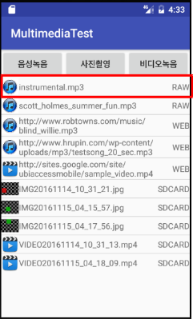
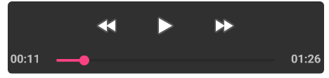

layout: true .top-line[] --- class: center, middle # 멀티미디어 ### 오디오 재생, 녹음 ### 동영상 재생, 카메라 사용 --- class: center, middle # 오디오 재생하기 --- ## MediaPlayer * android.media 패키지에 있는 클래스 * 오디오, 동영상 재생 * 지원 미디어 포맷 - 오디오:mp3, wav, amr 등 * 데이터 소스 지정 방법 - 프로젝트 로컬 리소스 - 단말 SD카드 (외부 저장소 접근 권한(**READ_EXTERNAL_STORAGE**) 필요) - 웹 상의 URLs (인터넷 접근 권한(**INTERNET**) 필요) ```xml <manifest ... > <uses-permission android:name="android.permission.INTERNET" /> </manifest> ``` --- ## 데이터 소스에 따른 재생 방법 * res/raw 폴더에 있는 오디오 리소스 재생 ```java MediaPlayer mediaPlayer = MediaPlayer.create(context, R.raw.sound_file_1); mediaPlayer.start(); ``` * URL로부터 오디오 재생 ```java String url = "http://www.hrupin.com/wp-content/uploads/mp3/testsong_20_sec.mp3"; MediaPlayer mediaPlayer = new MediaPlayer(); mediaPlayer.setDataSource(url); mediaPlayer.prepare(); // 버퍼링으로 인해 오래 걸릴 수 있음 mediaPlayer.start(); ``` --- ## URI 기반 재생 방법 * URI는 정보의 고유한 명칭으로 웹 주소를 나타내는 URL보다 더 상위의 개념 - File 타입: file://파일패스/파일이름 + file:///storage/emulated/0/Pictures/camera_image.jpg - 안드로이드 리소스 타입: android.resource://패키지이름/리소스폴더/리소스이름 + android.resource://com.example.kwanwoo.multimediatest/raw/instrumental - URL 타입: http://호스트주소/패스 + http://www.hrupin.com/wp-content/uploads/mp3/testsong_20_sec.mp3 - 컨텐츠 타입: content://정보제공자/패스/아이디 + content://media/external/video/media/154 --- ## URI 기반 재생 방법 * 패턴 ```java Uri myUri = ....; // initialize Uri here MediaPlayer mediaPlayer = new MediaPlayer(); mediaPlayer.setDataSource(getApplicationContext(), myUri); mediaPlayer.prepare(); mediaPlayer.start(); ``` * Uri 클래스의 주요 메소드 - static Uri parse(String uriString) - Uri문자열로부터 Uri 객체 생성 ```java Uri image_Uri = Uri.parse("file:///storage/emulated/0/Pictures/camera_image.jpg"); ``` - static Uri.fromFile(File file) - file로부터 Uri 객체 생성 ```java Uri image_Uri = Uri.fromFile( new File(Environment.getExternalStorageDirectory().getPath()+"/Pictures/camera_imge.jpg"))); ``` --- ## 예제 ```java mListView.setOnItemClickListener(new AdapterView.OnItemClickListener() { * public void onItemClick(AdapterView<?> adapterView, View view, int position, long l) { ... switch (((MediaItem) mAdapter.getItem(position)).type) { case MediaItem.AUDIO: try { * playAudio(((MediaItem) mAdapter.getItem(position)).uri); } catch (Exception e) { ... } ... } } }); ``` ```java *private void playAudio(Uri uri) throws Exception { ... mMediaPlayer = new MediaPlayer(); * mMediaPlayer.setDataSource(getApplicationContext(), uri); mMediaPlayer.prepare(); mMediaPlayer.start(); } ```  .footnote[https://github.com/kwanu70/AndroidExamples/blob/master/chap10/MultimediaTest/app/src/main/java/com/example/kwanwoo/multimediatest/MainActivity.java] ??? 1. 그림의 앱 화면에서 리스트 항목 선택 2. onItemClick() 메소드가 호출됨 3. mAdapter.getItem(position).uri 로 선택된 항목의 uri값을 추출 4. 추출 uri를 인자로 playAudio() 호출 --- class: center, middle # 동영상 재생하기 --- ## VideoView * MediaPlayer로도 비디오 재생이 가능하나, VideoView 위젯을 이용하면 매우 간단히 비디오 재생이 가능 * VideoView 활용 절차 - XML 레이아웃에 <VideoView> 태그 추가 - Java 코딩 1. VideoView 객체 참조 2. [선택사항] 미디어콘트롤러 설정  3. 재생할 동영상 URI 설정 4. 재생 시작 --- ## 예제 ```xml <LinearLayout ...> * <VideoView android:id="@+id/videoView" android:layout_width="match_parent" android:layout_height="match_parent" android:layout_marginTop="20dp" /> </LinearLayout> ``` ```java /*1*/ videoView = (VideoView) findViewById(R.id.videoView); MediaController mc = new MediaController(this); */*2*/ videoView.setMediaController(mc); */*3*/ videoView.setVideoURI(Uri.parse(VIDEO_URL)); videoView.setOnPreparedListener(new MediaPlayer.OnPreparedListener() { public void onPrepared(MediaPlayer player) { videoView.seekTo(0); */*4*/ videoView.start(); } }); ``` .footnote[https://github.com/kwanu70/AndroidExamples/blob/master/chap10/MultimediaTest/app/src/main/res/layout/activity_video.xml https://github.com/kwanu70/AndroidExamples/blob/master/chap10/MultimediaTest/app/src/main/java/com/example/kwanwoo/multimediatest/VideoActivity.java] --- class: center, middle # 오디오 녹음 하기 --- ## MediaRecorder * android.media 패키지에 있는 클래스 * 오디오 녹음, 동영상 녹화 기능 * 필요한 권한 ```xml <manifest ... > <uses-permission android:name="android.permission.RECORD_AUDIO" /> </manifest> ``` * 오디오 녹음 절차 1. 권한 검사 및 요청 (Android 6.0이상 부터) 2. MediaRecorder 객체 생성 3. 오디오 입력 및 출력 형식 설정 4. 오디오 인코더와 출력 파일 설정 5. 녹음 시작 ??? **주의** Android 6.0 이상부터는 앱 실행 중에 권한 검사 및 요청 필요 --- ## 권한 검사 및 요청 ```java // onCreate() 메소드에서 앱 시작시 호출 private void checkDangerousPermissions() { String[] permissions = { Manifest.permission.READ_EXTERNAL_STORAGE, * Manifest.permission.WRITE_EXTERNAL_STORAGE, // 외부 저장소에 파일을 저장할 때 필요 * Manifest.permission.RECORD_AUDIO }; int permissionCheck = PackageManager.PERMISSION_GRANTED; for (int i = 0; i < permissions.length; i++) { * permissionCheck = ContextCompat.checkSelfPermission(this, permissions[i]); if (permissionCheck == PackageManager.PERMISSION_DENIED) { break; } } if (permissionCheck != PackageManager.PERMISSION_GRANTED) { * ActivityCompat.requestPermissions(this, permissions, 1); } } ``` .footnote[https://github.com/kwanu70/AndroidExamples/blob/master/chap10/MultimediaTest/app/src/main/java/com/example/kwanwoo/multimediatest/MainActivity.java] --- ## 오디오 녹음 시작 ```java private void startAudioRec() { * mMediaRecorder = new MediaRecorder(); * mMediaRecorder.setAudioSource(MediaRecorder.AudioSource.MIC); * mMediaRecorder.setOutputFormat(MediaRecorder.OutputFormat.MPEG_4); * mMediaRecorder.setAudioEncoder(MediaRecorder.AudioEncoder.DEFAULT); recFileN = "VOICE" + currentDateFormat() + ".mp4"; // currentDateFormat(): 현재 시각을 “yyyyMMdd_HH_mm_ss” 형태로 반환 * mMediaRecorder.setOutputFile(Environment.getExternalStorageDirectory().getPath() + "/Music/" + recFileN); // 출력 파일의 위치를 외부저장소의 /Music/ 위치로 설정 try { * mMediaRecorder.prepare(); Toast.makeText(getApplicationContext(), "녹음을 시작하세요.", Toast.LENGTH_SHORT).show(); * mMediaRecorder.start(); } catch (Exception ex) { Log.e("SampleAudioRecorder", "Exception : ", ex); } } ``` .footnote[https://github.com/kwanu70/AndroidExamples/blob/master/chap10/MultimediaTest/app/src/main/java/com/example/kwanwoo/multimediatest/MainActivity.java] --- ## 오디오 녹음 중단 ```java private void stopAudioRec() { * mMediaRecorder.stop(); * mMediaRecorder.release(); mMediaRecorder = null; Uri uri = Uri.parse("file://" + Environment.getExternalStorageDirectory().getPath() + "/Music/"+ recFileN); // 리스트 뷰의 항목으로 녹음된 파일 이름과 URI를 추가 mAdapter.addItem(new MediaItem(MediaItem.SDCARD, recFileN,uri)); Toast.makeText(getApplicationContext(), "녹음이 중지되었습니다.", Toast.LENGTH_SHORT).show(); } ``` .footnote[https://github.com/kwanu70/AndroidExamples/blob/master/chap10/MultimediaTest/app/src/main/java/com/example/kwanwoo/multimediatest/MainActivity.java] --- class: center, middle # 카메라 앱으로 사진 및 동영상 저장하기 --- ## 카메라 앱으로 사진찍기 * 특별한 Permission이 필요 없음 * 카메라 앱 요청 ```java private void dispatchTakePictureIntent() { * Intent takePictureIntent = new Intent(MediaStore.ACTION_IMAGE_CAPTURE); if (takePictureIntent.resolveActivity(getPackageManager()) != null) { // resolveActivity(): takePictureIntent를 처리할 수 있는 (사진찍기) 액티비티 반환 startActivity(takePictureIntent); } } ``` .footnote[https://github.com/kwanu70/AndroidExamples/blob/master/chap10/MultimediaTest/app/src/main/java/com/example/kwanwoo/multimediatest/MainActivity.java] --- ## 카메라 앱으로 찍은 사진 저장하기 * [사전조건] 외부 공유 저장소에 저장하기 위해서 Permission 획득 과정 필요 ```java *Intent takePictureIntent = new Intent(MediaStore.ACTION_IMAGE_CAPTURE); If (takePictureIntent.resolveActivity(getPackageManager()) != null) { mPhotoFileName = ＂IMG＂+currentDateFormat()+＂.jpg＂; mPhotoFile = new File( Environment.getExternalStoragePublicDirectory(Environment.DIRECTORY_PICTURES), mPhotoFileName); if (mPhotoFile !=null) { // 카메라 앱으로 찍은 이미지를 저장할 파일 설정 takePictureIntent.putExtra(MediaStore.EXTRA_OUTPUT, Uri.fromFile(mPhotoFile)); * startActivityForResult(takePictureIntent, REQUEST_IMAGE_CAPTURE); } else Toast.makeText(getApplicationContext(), ＂file null＂, Toast.LENGTH_SHORT).show(); } ``` .footnote[https://github.com/kwanu70/AndroidExamples/blob/master/chap10/MultimediaTest/app/src/main/java/com/example/kwanwoo/multimediatest/MainActivity.java] --- ## 카메라 앱으로 찍은 사진 저장하기 * onActivityResult() 메소드에서 저장된 사진을 리스트 뷰의 항목으로 추가 ```java protected void onActivityResult(int requestCode, int resultCode, Intent data) { if (requestCode == REQUEST_IMAGE_CAPTURE && resultCode == RESULT_OK) { if (mPhotoFileName != null) { mPhotoFile = new File( Environment.getExternalStoragePublicDirectory(Environment.DIRECTORY_PICTURES), mPhotoFileName); mAdapter.addItem(new MediaItem( MediaItem.SDCARD, // 미디어 항목 위치 종류 mPhotoFileName, // 미디어 항목 표시 이름 Uri.fromFile(mPhotoFile), // 미디어 항목 Uri 객체 MediaItem.IMAGE)); // 미디어 항목 타입 } } } ``` .footnote[https://github.com/kwanu70/AndroidExamples/blob/master/chap10/MultimediaTest/app/src/main/java/com/example/kwanwoo/multimediatest/MainActivity.java] --- ## 카메라 앱으로 동영상 촬영하기 * 동영상 촬영 시작 ```java static final int REQUEST_VIDEO_CAPTURE = 2; private void dispatchTakeVideoIntent() { * Intent takeVideoIntent = new Intent(MediaStore.ACTION_VIDEO_CAPTURE); if (takeVideoIntent.resolveActivity(getPackageManager()) != null) { startActivityForResult(takeVideoIntent, REQUEST_VIDEO_CAPTURE); } } ``` .footnote[https://github.com/kwanu70/AndroidExamples/blob/master/chap10/MultimediaTest/app/src/main/java/com/example/kwanwoo/multimediatest/MainActivity.java] --- ## 촬영결과를 외부저장소 파일로 저장하기 ```java protected void onActivityResult(int requestCode, int resultCode, Intent data) { ...생략... if (requestCode == REQUEST_VIDEO_CAPTURE && resultCode == RESULT_OK) { Uri sourceUri = null; if (data != null) * sourceUri = data.getData(); // 동영상 촬영결과 획득 if (sourceUri != null) { recFileN = "VIDEO"+currentDateFormat()+".mp4"; // 파일 이름 File destination = new File(Environment.getExternalStorageDirectory().getPath()+ "/Movies/"+recFileN); // 동영상을 저장할 외부저장소 파일 saveFile(sourceUri, destination); //sourceUri 영상을 destination 파일로 저장 mAdapter.addItem(new MediaItem( MediaItem.SDCARD, // 미디어 항목 위치 종류 recFileN, // 미디어 항목 표시 이름 Uri.fromFile(destination), // 미디어 항목 Uri 객체 MediaItem.VIDEO)); // 미디어 항목 타입 } } } ``` .footnote[https://github.com/kwanu70/AndroidExamples/blob/master/chap10/MultimediaTest/app/src/main/java/com/example/kwanwoo/multimediatest/MainActivity.java]